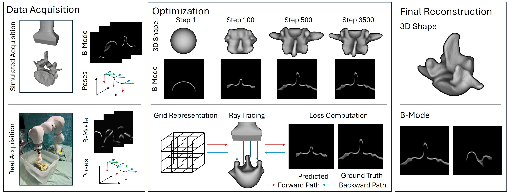
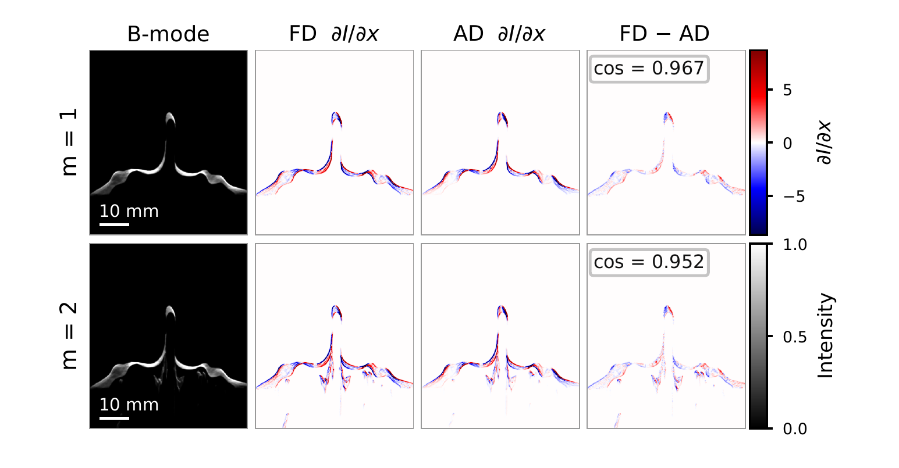
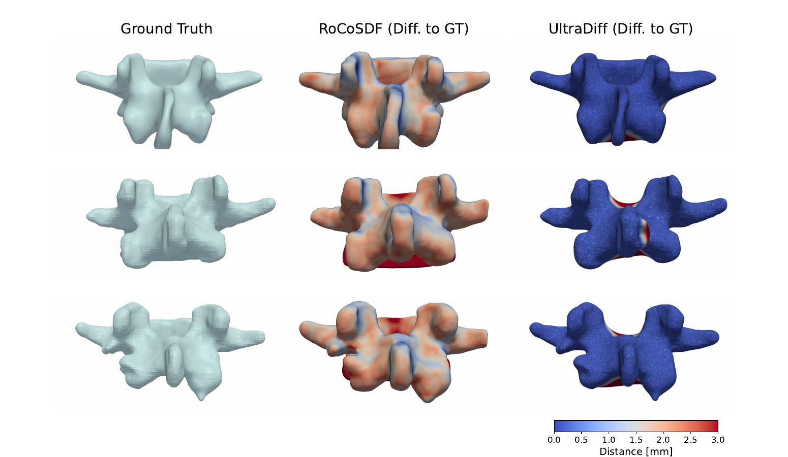
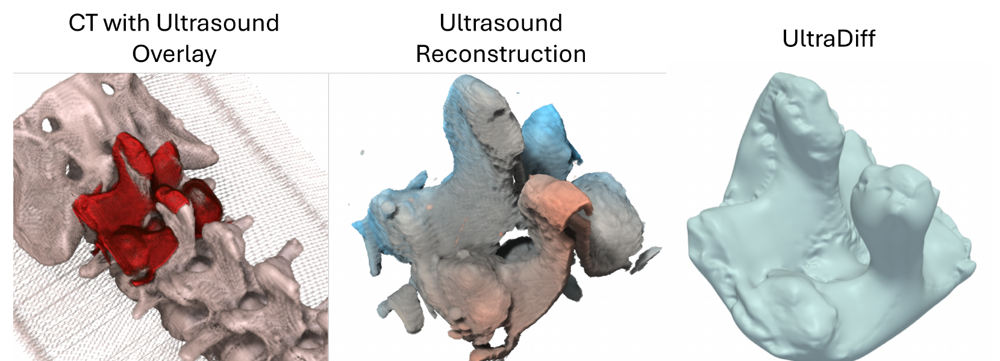

UltraDiff: Differentiable Ray Tracing in Ultrasound for Shape Optimization
Felix Dülmer, Magdalena Wysocki, Nassir Navab, Mohammad Farid Azampour
SIGGRAPH Asia 2026 Technical Communications (Kuala Lumpur, Malaysia)
Abstract
Physically-based differentiable rendering enables gradient-based optimization of scene parameters by matching rendered images to measurements, but has so far mainly focused on light transport. We extend this paradigm to medical ultrasound, where image formation resembles transient rendering: echoes are binned by time-of-flight rather than projected onto an image plane. We present UltraDiff, a modular framework for differentiable ultrasound ray tracing. UltraDiff formulates ultrasound image formation as a path-space integral, gated by travel time between the transducer and tissue interfaces, and derives a Monte Carlo estimator of both the forward model and its gradients with respect to scene parameters. We demonstrate this on an inverse geometry estimation: starting from a sphere, an SDF is optimized until simulated echoes match measured ones, recovering vertebral surfaces from simulated B-mode sweeps and from a real robotic acquisition of a spine phantom. Unlike state-of-the-art ultrasound shape reconstruction methods, which rely on pre-segmented images, our approach operates unsupervised on B-mode images through analysis-by-synthesis, while achieving competitive geometric accuracy. Implemented on top of Mitsuba 3, UltraDiff brings differentiable path tracing to a new sensing modality and provides a foundation for inverse problems in acoustic imaging.

Video
Overview
Key figures from UltraDiff are shown below.
Shape optimization pipeline
Reference B-mode images and matching poses are acquired in simulation or with robotic ultrasound. UltraDiff then iteratively renders B-mode images from the current scene, computes the loss against the targets, and backpropagates it through the ray tracer to optimize the underlying signed distance field, starting from a sphere.


Gradient validation and multi-bounce transport
Analytic gradients (AD) with respect to a lateral SDF translation closely match finite differences (FD), with cosine similarities of 0.97 for single-bounce and 0.95 for two-bounce transport. The gradient concentrates in a thin band along the reflecting tissue boundary. Two-bounce paths reproduce the ghost echoes at greater apparent depth that single-direction ray-integration models cannot capture.


Reconstruction on synthetic vertebrae
On five vertebrae from VerSe2020, UltraDiff reduces Chamfer distance by 3.8× and mean absolute surface deviation by 6.8× relative to the best segmentation-based baseline, without requiring segmented input. Color encodes per-point distance to the ground truth in mm.


| Method | Chamfer ↓ | HD95 ↓ | MAD ↓ | EMD ↓ |
|---|---|---|---|---|
| RoCoSDF | 3.36 ± 0.14 | 2.31 ± 0.05 | 1.66 ± 0.08 | 3.22 ± 0.17 |
| UltraBoneUDF | 3.04 ± 0.25 | 2.78 ± 0.66 | 1.50 ± 0.16 | 3.62 ± 0.38 |
| UltrON | 3.33 ± 0.40 | 4.55 ± 2.78 | 1.36 ± 0.07 | 4.41 ± 0.70 |
| UltraDiff | 0.79 ± 0.09 | 3.20 ± 0.62 | 0.20 ± 0.05 | 2.87 ± 0.28 |
Geometric error on the synthetic dataset (mm, mean ± std over five vertebrae). Best values in bold.
Real spine-phantom reconstruction
On a real robotic acquisition of a spine phantom, the same forward model and optimization settings transfer without modification. UltraDiff recovers the overall anatomy and principal curvature, with remaining deviations localized to regions of weak or ambiguous signal.


Citation
If you find this work useful, please cite:
@inproceedings{duelmer2026ultradiff,
title={UltraDiff: Differentiable Ray Tracing in Ultrasound for Shape Optimization},
author={Duelmer, Felix and Wysocki, Magdalena and Navab, Nassir and Azampour, Mohammad Farid},
booktitle={SIGGRAPH Asia 2026 Technical Communications},
year={2026},
publisher={ACM},
doi={10.1145/3829339.3847840}
}